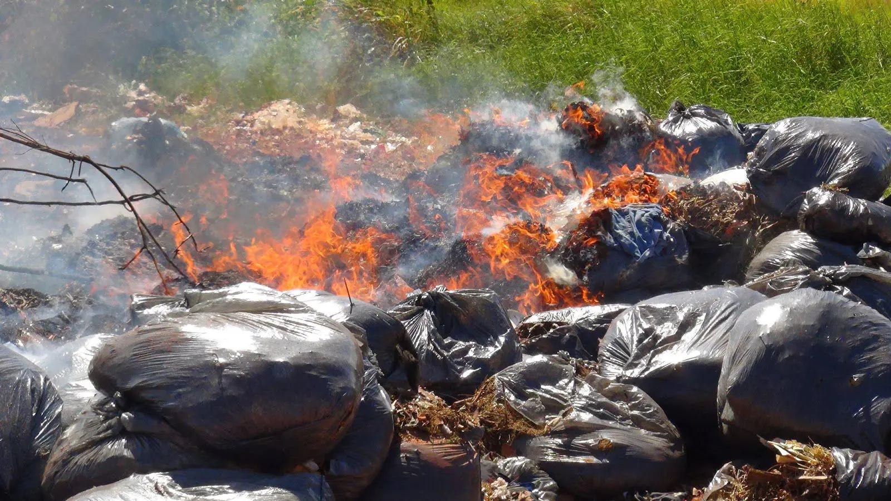

crime ambiental
o processo da queima do lixo é crime para o mundo
O transporte de lixo e seus processos de busca por lixos recicláveis e suas curiosidades
A queima ambiente, também conhecida como queimada, é uma prática nociva que provoca sérios danos ao meio ambiente, à saúde humana e à biodiversidade. Consiste na queima indiscriminada de vegetação, seja para limpeza de terrenos, preparo de áreas para agricultura, pecuária ou mesmo como prática criminosa para especulação imobiliária.
No Brasil, a queima de vegetação sem autorização é considerada crime ambiental, conforme a Lei nº 9.605/98. A legislação estabelece pena de detenção de seis meses a um ano, e multa, para quem provocar incêndio em mata ou floresta. Se o crime resultar em danos a Unidades de Conservação, a pena pode ser aumentada em até 50%.
Além disso, há outras leis e regulamentos estaduais e municipais que podem impor penalidades adicionais. Em algumas regiões do país, a multa por queimada irregular pode variar de milhares a milhões de reais, dependendo da gravidade do dano ambiental causado.

É fundamental conscientizar a população sobre os impactos negativos das queimadas e promover práticas sustentáveis para preservar nosso meio ambiente.
A punição pode ser de multa e detenção de 6 meses a um ano, a infração do art. 49, do Decreto 6.514/2008, prevê multa do tipo fechado, com estabelecimento de R$ 6.000,00 (seis mil reais) por hectare ou fração desmatados. Podendo ocasionar também o risco de causar incêndio, colocando em perigo a vida, a integridade física e o patrimônio de outrem, com previsão de punição no código penal de reclusão de três a seis anos e multa.